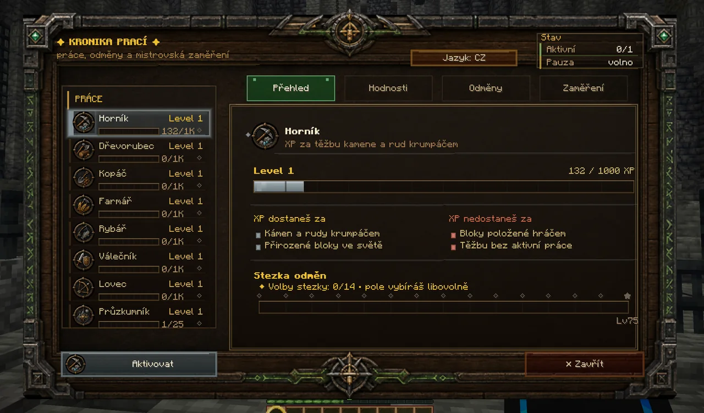

¶Práce
iPráce ti dávají zkušenosti za to, co děláš tak jako tak: těžíš, kácíš, sázíš nebo bojuješ. Postupem po stezce získáváš odměny.
¶Kronika prací
Prací se zabývá menu Kronika prací. Otevřeš ho záložkou s knihou nad inventářem nebo dlaždicí Práce v Rozcestníku.

V okně najdeš čtyři záložky: Přehled, Hodnosti, Odměny a Zaměření. Jazyk menu přepneš tlačítkem Jazyk: CZ.
¶Osm prací
| Práce | Zkušenosti dostaneš za |
|---|---|
| Horník | těžbu kamene a rud krumpáčem |
| Kopáč | kopání lopatou (hlína, písek a podobně) |
| Dřevorubec | kácení sekerou |
| Farmář | sázení plodin |
| Rybář | vylovené úlovky |
| Válečník | zabité nepřátele, kteří na tebe útočili |
| Lovec | zabitá zvířata |
| Průzkumník | objevení nových biomů |
Zkušenosti nedostaneš za bloky, které jsi sám položil, ani za těžbu bez aktivní práce. Za každou činnost dostaneš 1 XP.
¶Jak práci aktivovat
- Můžeš mít jen jednu aktivní práci. Chceš-li jinou, nejdřív aktuální deaktivuj.
- Práci vybereš tlačítkem Aktivovat v Kronice.
- Po výběru práce platí týdenní pauza (7 dní) na změnu. Počítá se od aktivace a deaktivace ji neprodlužuje.
!Pozor! Když práci deaktivuješ, další si můžeš vzít až po uplynutí pauzy.
¶Level a stezka odměn
- Každá práce má level 1 až 75. S každým levelem potřebuješ víc zkušeností. Průzkumník potřebuje zkušeností mnohem méně.
- Stezka odměn má 14 volitelných polí a závěrečné pole Lv75. Za každých 5 levelů dostaneš jednu volbu, kterou utratíš za libovolné pole. Závěr odemkneš na levelu 75, když máš všech 14 polí.
![OVĚŘIT] Konkrétní odměny na stezce (seznam je v konfiguraci serveru) a zda na ostrém serveru běží verze s limitem jedné práce.
¶Zaměření
Každá práce má tři větve zaměření (například rychlé kácení nebo obnova lesa u dřevorubce).
✕[OVĚŘIT] Bonusy zaměření se zatím nevyplácejí. Menu je sice slibuje, ale server dává stále 1 XP. Do opravy je na wiki nepřislibujeme.
© Všechna práva vyhrazena tvůrcům módů, naším výtvorem je pouze zprostředkování serveru. Nejedná se o oficiální produkt Minecraftu. Nejsme spojeni s Mojang Studios.